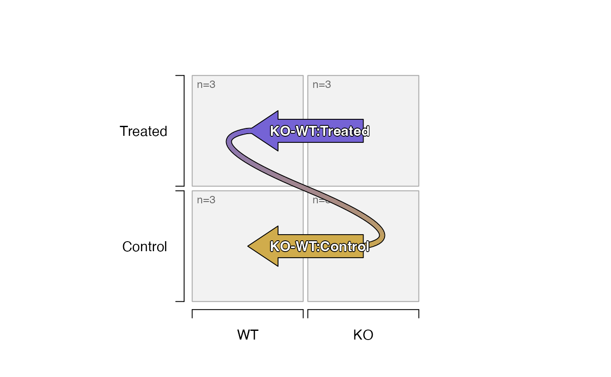
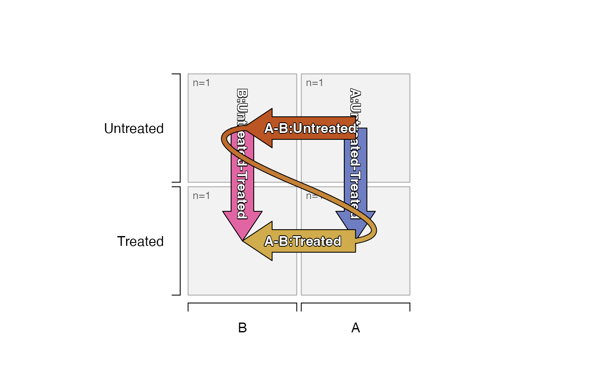

Create SEDesign from experimental groups
groups_to_sedesign(
ifactors,
group_colnames = NULL,
isamples = NULL,
idesign = NULL,
factor_order = NULL,
omit_grep = "[-,]",
max_depth = 2,
factor_sep = "_",
contrast_sep = "-",
remove_pairs = NULL,
pre_control_terms = NULL,
add_contrastdf = NULL,
contrast_names = NULL,
current_depth = 1,
rename_first_depth = TRUE,
return_sedesign = TRUE,
default_order = c("asis", "sort_samples", "mixedSort"),
verbose = FALSE,
...
)Arguments
- ifactors
data.frameorcharactervector.When
data.frameis supplied, each column is used as a design factor, and rownames are recognized as sample identifiers.When
charactervector is supplied, it is converted todata.frameby splitting values with a delimiterfactor_sep, and names are recognized as sample identifiers.
- group_colnames
charactervector orNULL, used to define a subset of columns to use whenifactorsis supplied as adata.frame. Whenifactorsis supplied as acharactervector, this argument is used to define thecolnames.- isamples
charactervector orNULL, optionally used to subset the sample identifiers used in subsequent steps. Note that only groups and contrasts that contain samples will be defined.- idesign
numericmatrix orNULL, intended as an optional method to use an existing design matrix.- factor_order
integerorcharactervector, used to define a specific order of factors when generating contrasts, useful when there are multiple experimental factors. It can be helpful to force a secondary factor to be compared before a primary factor especially in two-way contrasts. Note thatfactor_orderrefers to the columns (factors) and not the factor levels (not column values).- omit_grep
characterregular expression pattern used to exclude secondary factors from contrasts.- max_depth
integervalue indicating the maximum depth of statistical contrasts to create. For examplemax_depth=2will allow two-way contrasts, andmax_depth=1will only create one-way contrasts.- factor_sep
characterstring used as a delimiter to separate experimental factors, when recognizing or creating experimental group names.- contrast_sep
characterstring used as a delimiter to separate groups within each contrast name.- remove_pairs
listofcharactervectors of factors that should not be compared. Eachcharactervector should contain two factor levels for any given experimental factor, where those two factor levels should not be compared in the same pairwise contrast. For example, consider an experimental factor definedtreatment <- c("control", "dex", "compoundx"). To prevent a direct comparison of"dex"to"compoundx", use argumentremove_pairs=list(c("dex", "compoundx")).- pre_control_terms
charactervector used to place factor levels first in the order of levels, so these terms will be the denominator for contrasts. This approach is useful when the inputifactorsdoes not already contain afactorwith a specific order of factor levels.- add_contrastdf
data.frameorcharacterorNULL, intended to include a specific contrast in the output. This argument is typically used during iterative processing, and is not usually user-defined. It must contain- contrast_names
characteroptional vector of specific contrasts to use when creating the contrast matrix. Whencontrast_names=NULLas default, the function defines contrasts using its internal logic. Whencontrast_namesis supplied, only thesecontrast_namesare used, with no other contrasts.- current_depth
integervalue used during iterative operations of this function.- rename_first_depth
logicalvalue used during iterative operations of this function.- return_sedesign
logicalused during iterative operations of this function. Whenreturn_sedesign=FALSEthis function returns alist:"contrast_df": adata.frameas used in argumentadd_contrastdf, which describes each unique contrast."contrast_names": acharactervector of contrast names, which becomecolnames()of the contrast matrix."idesign": anumericdesign matrix as defined by the input data, suitable for debugging purposes for example.
- verbose
logicalindicating whether to print verbose output.- ...
additional arguments are ignored.
- make_unique
logicalindicating whether to make output contrasts unique.
Value
SEDesign object with the following slots:
design:numericmatrix with sample-to-group associationcontrasts:numericmatrix with group-to-contrast associationsamples:charactervector that represents individual sample replicates, equivalent torownames()of thedesignmatrix.
Details
This function creates SEDesign with appropriate design
and contrasts, based upon experimental groups.
This approach will use multiple experimental factors
to create appropriate one-way and n-way contrasts,
where each contrast represents a symmetric comparison
of each independent factor.
Input can be provided in one of two ways:
SummarizedExperimentwhere experiment design is derived fromSummarizedExperiment::colData()of theseobject, and uses columns defined bygroup_colnames. This input should be equivalent to providing adata.framewhoserownames()are equal tocolnames(se).data.framewhere each column represents a design factor.An example of
data.frameinput:
ifactors <- data.frame( treatment=c("Control", "Control", "Treated", "Treated"), genotype=c("Wildtype", "Knockout", "Wildtype", "Knockout"))charactervector, where design factor levels are separated by a delimiter such as underscore"_". This input will be converted todata.framebefore processing.An example of
characterinput:
ifactors <- c( "Control_Wildtype", "Control_Knockout", "Treated_Wildtype", "Treated_Knockout")
When rownames are provided in the data.frame, or names
are provided with a character vector, they are retained
and used as sample identifiers.
Note:
This function will change any "-" in a factor name to
"." prior to detecting valid contrasts, in order to
prevent confusion and potential problems using the
contrast names in downstream analyses.
This step does not call base::make.names(), so that
step should be run beforehand if required.
Troubleshooting
When this function returns no contrasts, or returns an unexpected error during processing, it is most likely due to the limitation of comparing one factor at a time. For example, the logic will not define contrast
time1_treatment1-time2_treatment2, because this contrast changes two factors, it will only permit eithertime1_treatment1-time1_treatment2ortime1_treatment1-time2_treatment1.max_depthandfactor_orderare used to define the order in which factors are compared, but do not affect the order of factors used for things like group names.
See also
Other jam experiment design:
check_sedesign(),
contrast_colors_by_group(),
plot_sedesign(),
sedesign_to_factors()
Examples
# first define a vector of sample groups
igroups <- jamba::nameVector(paste(rep(c("WT", "KO"), each=6),
rep(c("Control", "Treated"), each=3),
sep="_"),
suffix="_rep");
igroups <- factor(igroups, levels=unique(igroups));
igroups;
#> WT_Control_rep1 WT_Control_rep2 WT_Control_rep3 WT_Treated_rep1 WT_Treated_rep2
#> WT_Control WT_Control WT_Control WT_Treated WT_Treated
#> WT_Treated_rep3 KO_Control_rep1 KO_Control_rep2 KO_Control_rep3 KO_Treated_rep1
#> WT_Treated KO_Control KO_Control KO_Control KO_Treated
#> KO_Treated_rep2 KO_Treated_rep3
#> KO_Treated KO_Treated
#> Levels: WT_Control WT_Treated KO_Control KO_Treated
sedesign <- groups_to_sedesign(igroups);
design(sedesign);
#> WT_Control WT_Treated KO_Control KO_Treated
#> WT_Control_rep1 1 0 0 0
#> WT_Control_rep2 1 0 0 0
#> WT_Control_rep3 1 0 0 0
#> WT_Treated_rep1 0 1 0 0
#> WT_Treated_rep2 0 1 0 0
#> WT_Treated_rep3 0 1 0 0
#> KO_Control_rep1 0 0 1 0
#> KO_Control_rep2 0 0 1 0
#> KO_Control_rep3 0 0 1 0
#> KO_Treated_rep1 0 0 0 1
#> KO_Treated_rep2 0 0 0 1
#> KO_Treated_rep3 0 0 0 1
contrasts(sedesign);
#> Contrasts
#> Levels KO_Control-WT_Control KO_Treated-WT_Treated WT_Treated-WT_Control
#> WT_Control -1 0 -1
#> WT_Treated 0 -1 1
#> KO_Control 1 0 0
#> KO_Treated 0 1 0
#> Contrasts
#> Levels KO_Treated-KO_Control
#> WT_Control 0
#> WT_Treated 0
#> KO_Control -1
#> KO_Treated 1
#> Contrasts
#> Levels (KO_Treated-WT_Treated)-(KO_Control-WT_Control)
#> WT_Control 1
#> WT_Treated -1
#> KO_Control -1
#> KO_Treated 1
# plot the design and contrasts
plot_sedesign(sedesign)
# the two-way contrasts can be visibly flipped, since they are equivalent
plot_sedesign(sedesign, flip_twoway=TRUE)
# the design can be subset by sample
all_samples <- samples(sedesign)
subset_samples1 <- all_samples[-1:-3];
plot_sedesign(sedesign[subset_samples1, ])
#> Warning: longer object length is not a multiple of shorter object length
# the group n=# replicates are updated
subset_samples2 <- all_samples[c(-1, -6, -11)];
plot_sedesign(sedesign[subset_samples2, ])
# The design * contrast matrix can be displayed in full
design(sedesign) %*% contrasts(sedesign);
#> Contrasts
#> KO_Control-WT_Control KO_Treated-WT_Treated
#> WT_Control_rep1 -1 0
#> WT_Control_rep2 -1 0
#> WT_Control_rep3 -1 0
#> WT_Treated_rep1 0 -1
#> WT_Treated_rep2 0 -1
#> WT_Treated_rep3 0 -1
#> KO_Control_rep1 1 0
#> KO_Control_rep2 1 0
#> KO_Control_rep3 1 0
#> KO_Treated_rep1 0 1
#> KO_Treated_rep2 0 1
#> KO_Treated_rep3 0 1
#> Contrasts
#> WT_Treated-WT_Control KO_Treated-KO_Control
#> WT_Control_rep1 -1 0
#> WT_Control_rep2 -1 0
#> WT_Control_rep3 -1 0
#> WT_Treated_rep1 1 0
#> WT_Treated_rep2 1 0
#> WT_Treated_rep3 1 0
#> KO_Control_rep1 0 -1
#> KO_Control_rep2 0 -1
#> KO_Control_rep3 0 -1
#> KO_Treated_rep1 0 1
#> KO_Treated_rep2 0 1
#> KO_Treated_rep3 0 1
#> Contrasts
#> (KO_Treated-WT_Treated)-(KO_Control-WT_Control)
#> WT_Control_rep1 1
#> WT_Control_rep2 1
#> WT_Control_rep3 1
#> WT_Treated_rep1 -1
#> WT_Treated_rep2 -1
#> WT_Treated_rep3 -1
#> KO_Control_rep1 -1
#> KO_Control_rep2 -1
#> KO_Control_rep3 -1
#> KO_Treated_rep1 1
#> KO_Treated_rep2 1
#> KO_Treated_rep3 1
# make "KO" the control term instead of "WT"
contrast_names(groups_to_sedesign(igroups, pre_control_terms=c("KO")))
#> [1] "WT_Control-KO_Control"
#> [2] "WT_Treated-KO_Treated"
#> [3] "KO_Treated-KO_Control"
#> [4] "WT_Treated-WT_Control"
#> [5] "(WT_Treated-KO_Treated)-(WT_Control-KO_Control)"
# change the order of factors compared
contrast_names(groups_to_sedesign(igroups, factor_order=2:1))
#> [1] "WT_Treated-WT_Control"
#> [2] "KO_Treated-KO_Control"
#> [3] "KO_Control-WT_Control"
#> [4] "KO_Treated-WT_Treated"
#> [5] "(KO_Treated-KO_Control)-(WT_Treated-WT_Control)"
# prevent comparisons of WT to WT, or KO to KO
sedesign_2 <- groups_to_sedesign(as.character(igroups),
remove_pairs=list(c("WT"), c("KO")))
contrast_names(sedesign_2)
#> [1] "KO_Control-WT_Control"
#> [2] "KO_Treated-WT_Treated"
#> [3] "(KO_Treated-WT_Treated)-(KO_Control-WT_Control)"
plot_sedesign(sedesign_2)
#> Warning: no non-missing arguments to max; returning -Inf

# prevent comparisons of Treated to Treated, or Control to Control
sedesign_3 <- groups_to_sedesign(as.character(igroups),
remove_pairs=list(c("Treated"), c("Control")))
contrast_names(sedesign_3)
#> [1] "WT_Treated-WT_Control"
#> [2] "KO_Treated-KO_Control"
#> [3] "(KO_Treated-KO_Control)-(WT_Treated-WT_Control)"
plot_sedesign(sedesign_3)
#> Warning: no non-missing arguments to max; returning -Inf
# input as a data.frame with ordered factor levels
ifactors <- data.frame(Genotype=factor(c("WT","WT","KO","KO"),
levels=c("WT","KO")),
Treatment=factor(c("Treated","Control"),
levels=c("Control","Treated")))
# not necessary, but define rownames
rownames(ifactors) <- jamba::pasteByRow(ifactors);
ifactors;
#> Genotype Treatment
#> WT_Treated WT Treated
#> WT_Control WT Control
#> KO_Treated KO Treated
#> KO_Control KO Control
contrast_names(groups_to_sedesign(ifactors))
#> [1] "KO_Control-WT_Control"
#> [2] "KO_Treated-WT_Treated"
#> [3] "WT_Treated-WT_Control"
#> [4] "KO_Treated-KO_Control"
#> [5] "(KO_Treated-WT_Treated)-(KO_Control-WT_Control)"
plot_sedesign(groups_to_sedesign(ifactors))
# you can still override factor levels with pre_control_terms
plot_sedesign(groups_to_sedesign(ifactors, pre_control_terms=c("KO")))
# input as design matrix
design_matrix <- design(groups_to_sedesign(ifactors))
design_matrix
#> WT_Control WT_Treated KO_Control KO_Treated
#> WT_Treated 0 1 0 0
#> WT_Control 1 0 0 0
#> KO_Treated 0 0 0 1
#> KO_Control 0 0 1 0
contrast_names(groups_to_sedesign(design_matrix))
#> [1] "KO_Control-WT_Control"
#> [2] "KO_Treated-WT_Treated"
#> [3] "WT_Treated-WT_Control"
#> [4] "KO_Treated-KO_Control"
#> [5] "(KO_Treated-WT_Treated)-(KO_Control-WT_Control)"
# again the "KO" group can be the control by using pre_control_terms
contrast_names(groups_to_sedesign(design_matrix, pre_control_terms="KO"))
#> [1] "WT_Control-KO_Control"
#> [2] "WT_Treated-KO_Treated"
#> [3] "KO_Treated-KO_Control"
#> [4] "WT_Treated-WT_Control"
#> [5] "(WT_Treated-KO_Treated)-(WT_Control-KO_Control)"
# default_order="asis"
# contrasts show A-B, because B appears fist
# contrasts show Untreated-Treated because Treated appears first
df_test <- data.frame(
set=c("B", "B", "A", "A"),
treat=c("Treated", "Untreated"))
plot_sedesign(groups_to_sedesign(df_test))

plot_sedesign(groups_to_sedesign(jamba::pasteByRow(df_test)))
# default_order="sort_samples"
# contrasts show B-A, because A is sorted first
# contrasts show Treated-Untreated because sort_samples()
# determines "Untreated" is a preferred control term
plot_sedesign(groups_to_sedesign(df_test,
default_order="sort_samples"))
# default_order="mixedSort"
# contrasts show B-A, because A is sorted first
# contrasts show Untreated-Treated because Treated is sorted first
plot_sedesign(groups_to_sedesign(df_test,
default_order="mixedSort"))
plot_sedesign(groups_to_sedesign(df_test,
default_order="mixedSort",
pre_control_terms=c("Untreated")))